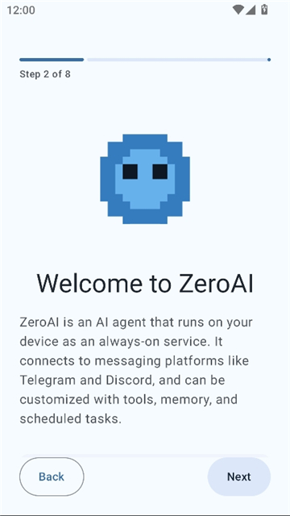
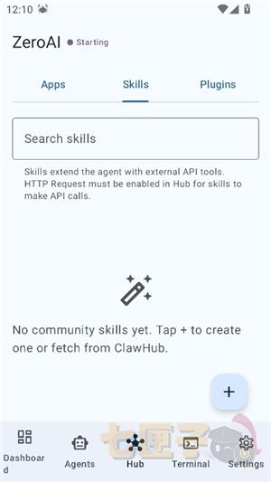

ZeroAI 版本进化史：从 0.1.x 系列看一款安卓智能体的成长节奏
ZeroAI 目前停在 0.1.7，这个版本号本身就很有意思——它不像已经定型的产品，倒像一套在快速试错的脚手架。我翻了一圈它的功能清单，想从已有的东西反推它走过的路。
现状：0.1.7 这一版到底是什么样
现在的 ZeroAI，我对它的印象是「功能模块已经铺开，但每个模块都还在打磨」。去它的官网上看，版本号 0.1.7 不算高，安装包却有 78MB——这个体积在安卓应用里不算小，说明核心依赖（Rust 编译的智能体引擎、Compose UI、沙箱脚本引擎）都已经打包进去了，不是什么轻量壳子。
具体看功能，它已经有了 Cron 式定时任务、Discord 和 Telegram 双通道接入、24 项细粒度安全开关这三块。有意思的是，它不需要 Root 权限——作为安卓应用跑前台服务保持常驻，通过 Android 标准 API 接入各种通道。这点很重要，因为很多同类方案要么要 Root 要么走 Termux + ADB 的弯路，ZeroAI 直接把这些复杂性打包进 APK 了。

来路：样本文档没提的部分恰恰说明……
样本文档里没有任何早期版本的变更日志，README 也是面向当前版本的使用指南。这本身就是一个信号——项目还处在「功能快速迭代，来不及好好归档历史」的阶段。版本号从 0.1.0 跳到 0.1.7，中间至少有七个小版本，但每个版本具体加了什么，外部几乎查不到。
不过从现有功能的组合关系，还是能反推迭代顺序的。最先落地的应该是安全模型——24 项能力开关默认只开最基础的几项（时间、随机数、数学、只读文件），其他全关。这种「保守起手」的设计，说明团队对智能体的安全边界是有警惕的，不是先堆功能再补安全。
然后是多通道接入。Telegram 和 Discord 两套都做了，而且还写了对比表——Telegram 适合个人、Discord 适合开发者社群。这说明他们不是只押注一个通道，而是想让智能体变成一个「哪里都能对话」的存在。
最后是Cron 定时任务。这个功能的前提是守护进程常驻——关掉守护进程，定时任务就不触发了。把定时任务放在后期做，说明守护进程这块底层能力先跑稳了，才往上叠定时触发的逻辑。
规律：从迭代节奏看团队的优先级
三件事的先后顺序（安全 → 通道 → 定时），暴露了团队的优先级。
他们一直在死磕的是「让智能体真正能用」，而不是「让智能体看起来很炫」。 24 项开关、不需要 Root、守护进程常驻——这些都是解决「能不能稳定跑、会不会出安全问题」的基础问题，而不是做什么炫酷的 AI 对话效果。
有一件事他们一直没碰：ZeroAI文档里提到了 Rhai 沙箱脚本引擎，但没有任何一篇样本讲具体怎么写 Rhai 脚本。这说明脚本扩展能力可能在规划中，但还没到要对外暴露文档的阶段。还有，Discord 接入写了语音频道不支持，这条也是实话——能做什么、不能做什么，他们不硬吹。
另一个观察：ZeroAI下载拿到的安装包基础信息里标注的系统要求有矛盾——七匣子写安卓 5.2 以上，仓库 README 写 Android 9。文档里专门解释了为什么应该以 Android 9 为准（前台服务模型、手势导航 API、64 位覆盖率），还补了一句「如果系统版本低于 Android 9，大概率无法正常运行」。这种主动拆解矛盾、给用户明确建议的做法，在同类产品里不多见，说明他们对用户踩坑这件事是上心的。

预判：照这个路线，下一步大概率走向哪里
我得先声明：这不是官方路线图，只是从已有的迭代规律推的。
首先，Rhai 脚本扩展的文档会补上。24 项安全开关里专门留了「运行 Rhai 脚本」「Rust 原生扩展调用」「动态加载第三方库」这些选项，但外部几乎找不到使用示例。当基础功能稳定后，开放脚本能力是自然的下一步。
其次，通道接入还会继续扩。现在有 Telegram 和 Discord，下一个大概率是国内用户更常用的通道——可能是企业微信、飞书，或者什么轻量的 Webhook 方案。多通道覆盖是他们一直在做的事。
最后，守护进程的可靠性会被继续加固。Cron 定时任务的稳定性完全依赖守护进程常驻，安卓系统对前台服务有限制，这块如果不持续优化，定时任务就容易翻车。0.1.x 系列里肯定藏着好几次「守护进程被杀 → 定时任务静默失败」的修复。
0.1.7 这个版本号其实还暗示了一点：离 0.2.0 可能不远了。等功能模块再补齐一轮，他们就该考虑一个正式的次版本号了。到时候会不会有完整的变更日志、会不会调整包体积、会不会开放更多脚本示例——这几个点值得盯着看。
这套资料在三个仓库都能拿到：GitHub上的仓库是主力维护，Gitee和GitCode做国内镜像和备份，方便不同网络环境的人查阅。